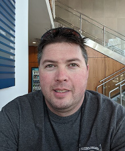
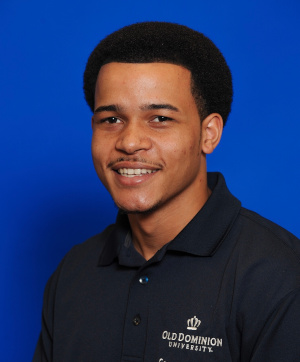

Team Members
Stephen Ayers
Algorithms Developer and Testing
Stephen Ayers currently resides in Chesapeake, Virginia. He is in his senior year at Old Dominion University completing a degree in Computer Science. He is currently a full time student who also turned his hobby of Magic: The Gathering into a job of sorts as his tournament winnings and content creation supplement his income while he completes his degree. His other hobbies include video games and cooking.
Aaron Berman
Team Lead and Webmaster
Aaron Berman is a resident of Norfolk, Virgina with his wife. He is currently pursuing a Computer Science degree with a Cyber-Security minor at Old Dominion University. He is a veteran of the United States Marine Corps. working with ground based RADAR systems. He acheived an Associates of Science in Computer Science in 2014 from Tidewater Community College. In 2018, he returned to school for a career change to computer science. His hobbies include collecting new hobbies and not being able to afford them.
Mike Campbell
Database Architect and Testing
Mike Campbell lives just outside of Richmond, Virginia with his wife, Brooke, and their cat and dog, Gaea and Maru. He intends to graduate from ODU in 2020 with a degree in Computer Science, then pursue a career in a specialization he's yet to decide on. Mike enjoys gaming with friends, binging Netflix, the outdoors in cold weather, and math.
Joshua Murphy
Documentation Manager and Database Developer
Joshua Murphy lives on the Eastern Shore of Virginia, in Nassawadox. He has a degree in Political Science from ODU and is currently in his senior year of getting his Computer Science degree. He is a member of two honor societies: Pi Sigma Alpha. Zeta Omega Chapter at Old Dominion and Phi Theta Kappa Honor Society. Hobbies include scuba diving, video gaming and board gaming.
Noah Jennings
Algorithms and UI/UX Developer
Noah Jennings is a junior Computer Science student at Old Dominion Univerity. He is currently conducting research on mobile rep detection and is funded by the NIH. His favorite hobbies asside from coding are skateboarding, physical fitness, and graphic design. He aims to contribute his knowledge in a research lab devoted to biomedical advancements.
Rosalie Oliva
UI/UX Developer
Rosalie Oliva lives in Newport News, Virginia. She has an Associate Degree in Computer Science from Thomas Nelson Community College. Furthermore, she is a senior at Old Dominion University working on achieving a Bachelors Degreee in Computer Science. Her favorite hobbies are playing pool, sitting at the beach and watching movies.
Mentors
Thomas Kennedy
Mentor
Professor Kennedy is a Lecturer for the Old Dominion Computer Science Department.
Janet Brunelle

Mentor
Professor Brunelle is the Assistant Chair, Chief Departmental Advisor, and Senior Lecturer for the Old Dominion Computer Science Department.